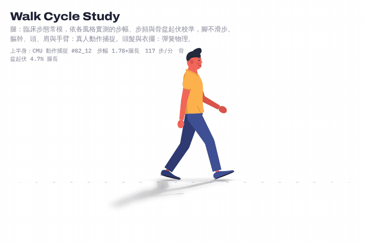
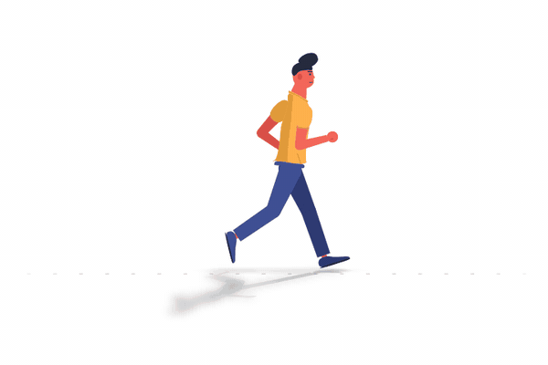
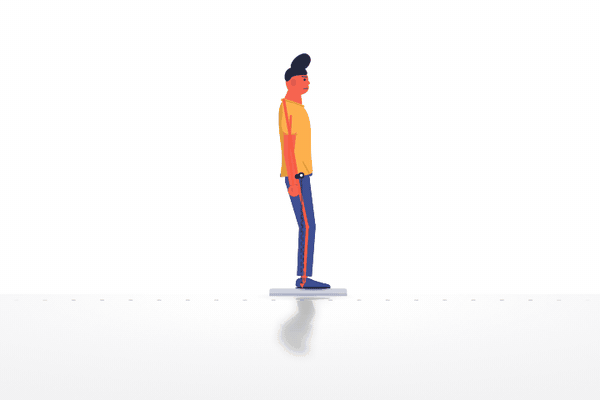
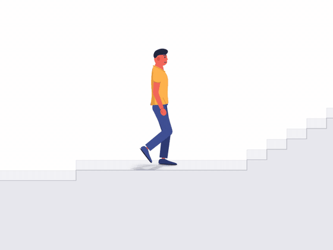
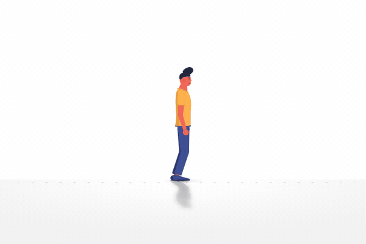
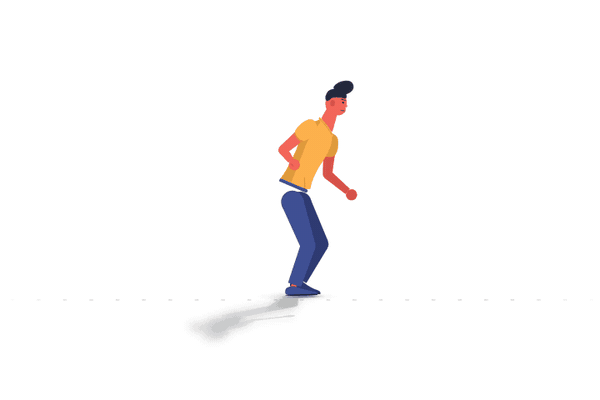
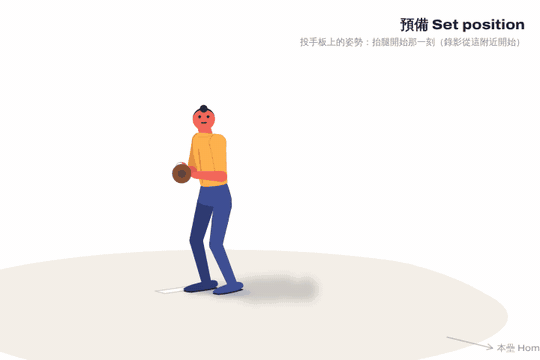

Movement Studies 動作研究
七個程序化動畫（另附群眾渲染器），每一個都由公開的生物力學資料驅動：臨床步態常模、測力板與真人動作捕捉。腳不滑步、騰空遵守重力，身體比例來自 ANSUR II 人體測量。點選任一動作進入互動頁面。
- 腳不滑步
- 實測資料
- ANSUR II 比例
- 純 Canvas，無相依套件
-

走路 Walk
24 位健康成人的臨床步態常模驅動雙腿，開心、平常、低落三種風格，可從原地起步。
96–117 步/分3 種情緒風格滑步 ≤ 0.0002 腿長WBDS · CMU mocap · ANSUR II
-

跑步 Run
28 位跑者在 2.5、3.5、4.5 m/s 的跑步機資料，真實騰空期，速度由地面反作用力積分而來。
161–183 步/分觸地 195–272 ms3 種跑速RBDS · CMU mocap
-

站立 Stand
59 位年輕人站在測力板上的晃動頻譜，以腳踝為支點的倒單擺，睜眼／閉眼 × 硬地／軟墊。
擺角 0.26° RMS4 種條件×1 / ×5 / ×10BDS (Santos & Duarte 2016)
-

樓梯與地形 Stairs & terrain
22 人上下 4 種階高與 6 種坡度，另有混合樓梯、坡道、路緣石與跨欄的無縫地形路線。
22 人4 階高 · 6 坡度跨欄 3 高度Camargo et al. 2021 · Chardon 2024 · Lu 2022
-

跳躍 Jump
原地反向跳與立定跳遠，依測力板文獻切分階段，騰空嚴格走 g = 9.81 m/s² 的拋物線。
騰空 473 ms跳高 25 cm立定跳遠 1.27 mCMU mocap · McMahon 2018 · Linthorne 2001
-

舞蹈 Dance
查爾斯頓、騷莎、印度舞，節拍從動作本身量出，附可開關的節拍器。
185 / 82 / 77 BPM3 種舞CMU mocap
-

投球 Pitch
67 位投手、194 顆快速直球的 3D 動作平均，三種視角、可逐事件步進，球速 84.8 mph。
84.8 mph肩外旋 168°3 種視角Driveline OBP · CC BY-NC-SA 4.0
-
140 walkers · ±100 ms
depth of field · 1920×1080
影片需在本機渲染群眾 Crowd
140 個不同身高、膚色、穿著的人用同一套走路步態一起走，起步時間差在 ±100 ms 內，前景有景深模糊，以 Playwright 逐格渲染成影片。
140 人20 s · 30 fps看原始碼 → GitHub crowd/
資料來源
- 走路：Fukuchi, Fukuchi & Duarte (2018) PeerJ 6:e4640，WBDS 步態資料庫
- 跑步：Fukuchi, Fukuchi & Duarte (2017) PeerJ 5:e3298，RBDS（CC-BY-4.0）
- 站立：Santos & Duarte (2016) PeerJ 4:e2648，BDS 平衡資料庫
- 樓梯與坡道：Camargo et al. (2021) J Biomech 119:110320；跨欄：Chardon et al. (2024)、Lu et al. (2022)
- 投球：Driveline OpenBiomechanics Project（CC BY-NC-SA 4.0）
- 上半身、跳躍、舞蹈：CMU Graphics Lab Motion Capture Database
- 身體比例：ANSUR II（Gordon et al. 2014）